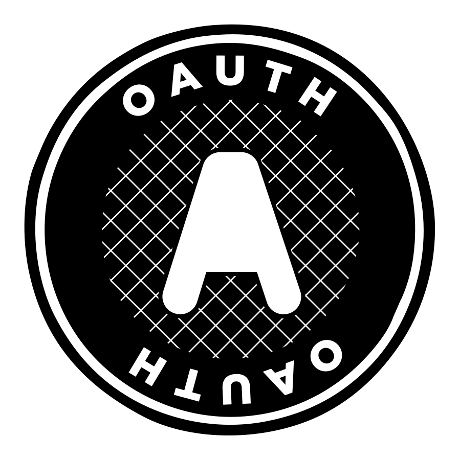
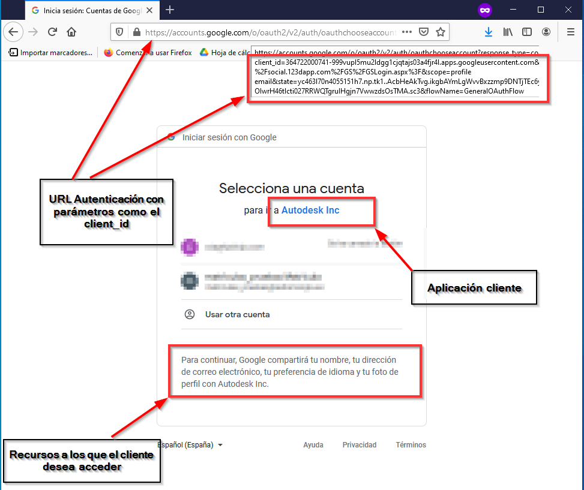

UD 3: Detección y corrección de vulnerabilidades en aplicaciones web
5.2.2. - OAth.
Los token permiten interactuar entre cliente y servidor, y la información del usuario se encuentra en el servidor, por ejemplo en una interfaz web para correo: el usuario, la contraseña, la lista de contactos o los correos recibidos. Pero junto con el crecimiento web ha surgido la necesidad de comunicación e intercambio de información entre usuarios, aplicaciones en el que usuario posee cuenta y aplicaciones terceras en las que no tiene cuenta.
Se necesita:
Autenticación de usuarios ante aplicaciones en las que no se dispone de cuenta.
Permitir a aplicaciones de terceros acceder a información almacenada en la aplicación en la que el usuario posee cuenta.
Delegar acciones del usuario a entidades terceras como una aplicación para realizar acciones en la que posee cuentas.
Chris Messina. Logo de OAth
Para ofrecer estas funcionalidades se define el estándar abierto OAuth, que se encuentra en la versión 2.0 y que no se limita únicamente a aplicaciones web, sino que puede ser utilizado en aplicaciones nativas e híbridas, para móviles y versión escritorio. En la página oficial de Oauth se puede encontrar la especificación, artículos y vídeos sobre el estándar.
Si hasta este momento los roles son cliente (navegador) y servidor, en este caso se introducen nuevos actores que permiten la funcionalidad anterior:
Propietario del recurso/ Resource Owner: Entidad que puede otorgar acceso a un recurso protegido, normalmente el usuario final.
Cliente/ Client: Aplicación que solicita acceso a un recurso protegido en nombre del propietario del recurso. Destacar que el concepto de cliente en el estándar recae sobre esta entidad.
Servidor de recursos/Resource Server: Servidor en el que se encuentra el recurso al que el cliente quiere acceder y para la que necesita la autorización del propietario.
Servidor de autorización/Authorization Server:Elemento que autentica al propietario del recurso, solicita el permiso de este y en caso de ser afirmativo y emite un token para ese cliente y recurso concreto que presentará ante el servidor de recursos para acceder al mismo.
Destacar que OAuth admite diferentes tipos y formatos de token, como el de revocación, renovación, o acceso (este último puede usar JWT)
Para saber más
¿Qué es OAth2?
Descripción textual alternativa.
Definición de OAth2, que problemas resuelve,scriba su contenido, casos de uso o roles entre otros.
La secuencia para la autenticación y autorización en OAuth2.0 por parte de una aplicación cliente dependerá en parte del tipo de aplicación y de la plataforma que implemente el servidor de recursos y autenticación, si bien el proceso general es muy similar, pueden existir diferencia entre diferentes plataformas, por ejemplo en Google es necesario registrar la aplicación cliente previamente y autorizar.
En un caso general con uso de los servicios en la parte de servidor de cliente (lenguaje PHP, Java, Python…) la secuencia es:
Paso previo.
Dar de alta a la aplicación web en la plataforma a utilizar. El alta se indica:
Nombre de la aplicación.
Sitio web de la aplicación.
URL de callback, el servidor de autorización redirigirá al propietario del recurso una vez se resuelva la solicitud de autorización.
Junto con el alta se obtienen las credenciales que el cliente presentará al propietario del recurso (URL de autenticación) y al servidor de autorización, y la clave del cliente que presentará al servidor de recursos junto con la autorización para acceder al recurso o API.
En este punto la aplicación se encuentra dada de alta y el cliente posee las credenciales a presentar ante el propietario y ante el servidor de recursos.
Paso 1.
Un usuario que no se encuentra registrado en la aplicación cliente desea entrar, ofreciendo al usuario la posibilidad de autenticarse con otras aplicaciones (normalmente Google, Facebook, Twitter..), al pulsar el enlace se abrirá una página con la URL de autenticación otorgada por el servidor al cliente al dar de alta la aplicación y otros parámetros que indican las características de la solicitud del cliente al servidor. Un ejemplo de dicha URL para los servicios de Google:
A la que se le añaden diversos parámetros, siendo los siguientes obligatorios:
client_id. Otorgado anteriormente.
redirect_ulr. Redirección a la que se lleva al usuario una vez realizado el proceso.
response_type: Si el servidor devuelve código de autorización.
scope: ámbito, recursos a los que solicita acceso..
Paso 2
En esta nueva página el usuario facilitará sus credenciales y autorizará al cliente para acceder a los recursos que se indican:

Punto de entrada a autenticación OAth2.
Paso 3.
Si la autenticación ha sido correcta, el servidor redirige al usuario a la url indicada en url de autenticación facilitada por el cliente y envía a la url de callback que indico el cliente al dar de alta la aplicación un código de autorización.
Paso 4.
El cliente con el código de autorización y otros detalles como el secreto del cliente indicados en la creación solicita un token de acceso al punto de entrada de la API
Paso 5.
El punto de acceso válida el código de autorización junto con el secreto del cliente y genera un token de acceso.
Paso 6.
Con el token de acceso la aplicación cliente puede acceder a los recursos autorizados por el propietario.
Debes conocer
Funcionamiento básico de OAth2.
Descripción textual alternativa
Ejemplo funcionamiento básico de OAth2.
En algunos tipos de aplicación no es posible garantizar el secreto del cliente con lo que se han de definir métodos alternativos de autenticación:
Código de autorización
Por defecto en aplicaciones web con lógica en el servidor
Implícito
Para aplicaciones nativas o aplicaciones web en el navegador. No es posible incluir el secreto del cliente en el código fuente ya que sería fácilmente accesible. El servidor de autenticación genera el token de acceso y lo facilita al cliente, sin pasar por el servidor de recursos.
Credenciales de contraseña del propietario del recurso:
utilizado con aplicaciones confiables, como aquellas pertenecientes al servicio, el usuario facilita su usuario y contraseña al cliente y este las presenta ante el servidor. Normalmente las aplicaciones de servidor y cliente son de la misma organización y confían mutuamente entre ellas.
Credenciales del cliente
Usadas con el acceso API de aplicaciones, la aplicación cliente entrega sus credenciales(id del cliente y su secreto) obteniendo un token de acceso para acceder a su propia cuenta.